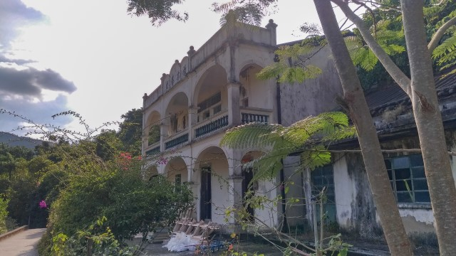

在2022年1月5日，我和 Alex 去了新界北區的粉嶺和鹿頸旅行。粉嶺和鹿頸我們都很多年沒有去了，所以有舊地重遊的感覺。
我們早上在荃灣荃昌中心旁的巴士站搭乘 278X 號巴士到粉嶺，在蓬瀛仙館站下車。
來到蓬瀛仙館，當然順道遊覽啦！蓬瀛仙館來過幾次，最後一次和 Alex 來，已經是30多年前了。
蓬瀛仙館在50至60年代是香港著名的旅遊勝地，每逢假日都人潮如鯽，是當時小學必定會去的旅遊景點。隨著時代的改變，蓬瀛仙館漸漸被冷落，現在來的都是年長的人，希望尋回當年的回憶。
竹遊覽完蓬瀛仙館，約早上 10:30, 便走到粉嶺名都商場，打算在那裡吃早餐。
粉嶺名都入口前有一株櫻花盛開的櫻花樹，吸引了很多人來拍照。
粉嶺名都商場内的食肆主要都是快餐店，不太合我們的胃口，最後走到粉嶺中心的好日子酒樓吃早餐。
用完早餐，走到粉嶺火車站 C 出口下面的小巴站，很順利搭乘了乘綠色專線小巴 56K, 約中午 12:10 便抵達鹿頸終點站，這裡也是新娘潭路北面的起點。
小巴站斜對面有兩間士多，方便行山人士先吃一些輕食才開始行程。
從鹿頸小巴站這裡出發，有多條遠足路線可以選擇，難度各異。
我們選擇了走吊燈籠徑最初的一段 — 經鳳坑到谷埔。這一段步道沿海而建，風景優美，而且鋪設得很好，行程十分輕鬆。

Okay! 開始行程！
離開小巴站，沿新娘潭路走。
只走了十多步，經過一個涼亭，這裡已經可以眺望沙頭角海、對岸的沙頭角和深圳市鹽田區，風景優美。
繼續沿新娘潭路走，不一會便來到一個分叉路口。
如果繼續沿新娘潭路一直走，便可到達新娘潭瀑布和大美篤。
我們今是往谷埔，在這裡轉左循雞谷樹下的方向走。
很快來到馬路的盡頭。
迎面是發記士多，右邊的村落便是雞谷樹下，而左邊的小徑便是吊燈籠徑和鳳坑家樂徑的入口。
原本想先往雞谷樹下内參觀，但路口的一位村民大聲喊: 「唔可以入去架。」
其實都可以理解的，近年多了很多人行山，而且都是一群一群，沿途不停的喊破喉嚨地高談闊論，影響了村民的生活。
我們在這裡拐左沿小徑走, 這是吊燈籠徑和鳳坑家樂徑重疊的一段。
以往經過村屋門前的步道，現在已經不可以通過，需要繞道走。
沿途都有往鳳坑、谷埔的標示，不會走錯路的，相信更重要的是：不會走錯進入民居！
離開雞谷樹下村落，沿海邊步道一直向前走。
當穿過樹林後，豁然開朗，沙頭角海、沙頭角村和深圳市就陳列在眼前，景色優美。
拐了幾個彎後，來到一個分叉路口，吊燈籠徑和鳳坑家樂徑在這裡分道揚鑣。
右邊往上的步道是鳳坑家樂徑。
我們是往谷埔，沿吊燈籠徑繼續向前走。
走了一會，有幾隻「好牛」打橫地站立在路中，剛好把整條路攔阻。等了一會，牛牛好像蠟像一樣，很有性格，完全不肯讓步。
最後唯有小心翼翼的在它們的屁股後面走過。最怕是牠們突然間 xx, 咁就搵你要啦!
接著是一段上山的長長石級。
走上山坡後，沿平緩步道繼續向前走。
走完平緩步道後，接著是另一條下山的石級。
穿過樹木，來到山下。沙頭角海對岸的沙頭角村和深圳市鹽田區的景色就在眼前，越來越清楚了。
從吊燈籠徑起點計，走了約50分鐘，來到第一個目的地 — 鳳坑村，是鹿頸與谷埔之間的一個客家村落。
鳳坑村的村屋古樸寧靜，配上屋前的蘆葦田，景色很美。
村口有一間盈佳茶座，供應馳名客家小菜，是一個不錯的遠足補充站。
不過，茶座並不是每天都營業的，如果打算在這裡用餐，出發前要用電話確定。
我們還未肚餓，繼續沿往谷埔的標示走。
再往前走便來到鳳坑村碼頭。路旁有一間鳳坑小食，供應一些簡單小食，也可以算是一個遠足的補充站。
碼頭上有一個白色燈塔，旁邊停泊了一隻藍色小船，風景非常優美。
離開鳳坑村，繼續沿吊燈籠徑向前走。從小巴站開始，沿途的岸邊都是紅樹林。
離步道不遠的海中有一個名為「水浸咀排」的小島，這是一個連島沙洲，當潮退時，便會露出步道和小島之間的沙洲，在那時候，行人可以步行往小島上。
看清楚，現在海中隱約現出一條黑線的地方，就是沙洲的位置。
因為沙洲的地勢比較高, 所以那兩位釣友都選擇站在那裡垂釣。
繼續往前走，經過一個佈滿怪石嶙峋的紅樹林海灣，風景很美。
走過石灘，路旁有幾間小屋，這裡是谷埔村口的啟才學校，就這樣輕輕鬆鬆的來到谷埔，也是我們今天遠足的終點站。
在30年代,谷埔村及鄰近的鹿頸村聚居了大量客家人, 因應教育需求, 村民自行籌集資金, 於1931年在谷埔村口興建了啟才學校。初期只有十多名學生, 隨著村落人口漸多，校舍不敷應用，故此在 1964 年在學校旁邊加建一幢兩層高的歐陸式校舍, 在最高峰期間, 學生高達九十多人。
到了80年代, 隨著大量村民遷移往巿區定居, 學生減少, 啟才學校於 1993 年黯然關閉, 漸遭荒廢。及後，兩層高的校舍經活化後成為供奉關帝的協天宮。
我們到訪當日, 剛好有幾位年輕人正將路口的校舍番新, 並漆上了新的油彩，但亦難掩荒涼的感覺。
接著我們去了谷埔碼頭一帶逛逛, 沿鄉間小路往谷埔老圍村內參觀。谷埔老圍村充滿濃厚的大自然氣息, 環境憩靜, 有如世外桃源。

谷埔村的面積很大，由谷埔新屋下、谷埔老圍、一肚、二肚、三肚、四肚及五肚這七個村落所組成。
遊覽完谷埔, 我們今天的遠足行程也到此為止, 接掉頭循原路離開。
步行約一小時便返回鹿頸小巴總站, 已經有一條長長的人龍正在等候。
在車站等了十多分鐘才登上小巴, 約半小時便返回粉嶺巴士站。
我們在粉嶺名都商場的元氣壽司吃晚餐, 然後乘火車離開。
就這樣結束了今天的粉嶺、鹿頸行程啦!
謝謝收看!
如果喜歡, 請免費訂閱我的頻道, 按個 LIKE 和留下評論!